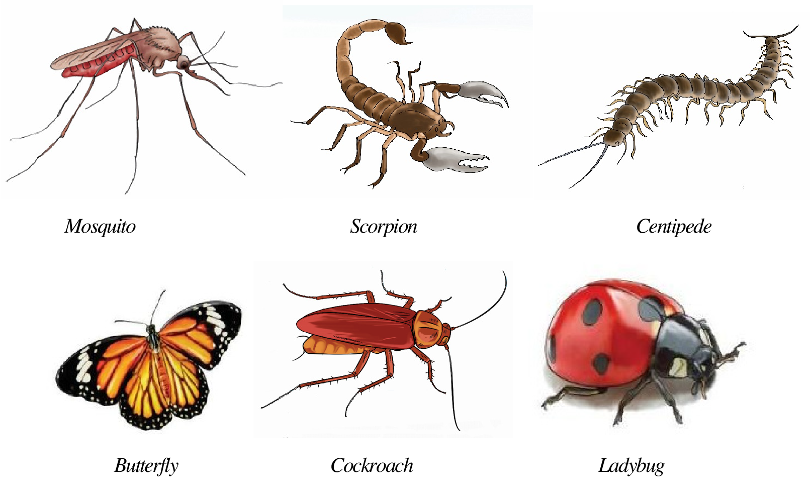
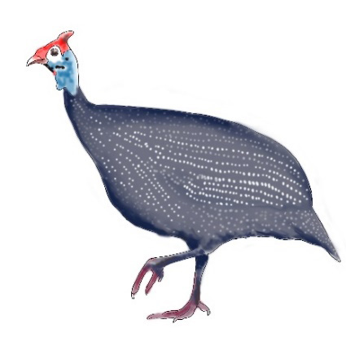
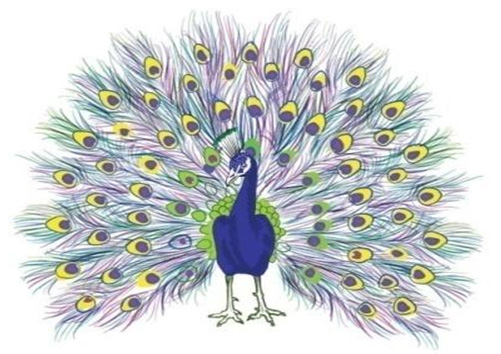

Mosquito
Scorpion
Centipede
Butterfly
Cockroach
Ladybug
Fine art manifestation on birds:
Birds have a natural beauty which exists either in appearance or the sounds they make. Beautiful birds attract the attention of the viewers. A peacock’s tail, for example, looks similar to a blueberry bush. A guinea fowl has feathers with different beautiful spot motifs which resemble the patterns found on a khanga (a textile design with its origin in East Africa). Moreover, birds chirp as they communicate. In so doing, they produce sweet melodies which are pleasant to listen. Figure 1.9 Shows art manifestation on birds.

Figure 1.9: Fine Art manifestation on birds